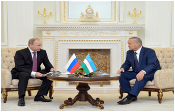

O'zbekiston –Rossiya: strategik sheriklikni yanada mustahkamlash yo'lida

O'zbekiston Respublikasi Prezidenti Islom Karimovning taklifiga binoan Rossiya Federatsiyasi Prezidenti Vladimir Putin 10–dekabr kuni rasmiy tashrif bilan mamlakatimizda bo'ldi.
Ko'ksaroy qarorgohida oliy martabali mehmonni rasmiy kutib olish marosimidan so'ng ikki davlat rahbarlari tor doirada muzokara o'tkazdi. –Rossiya Prezidentining ushbu tashrifini O'zbekiston –Rossiya siyosiy muloqotlari va turli darajadagi uchrashuvlarning uzviy davomi, tomonlarning o'zaro hamkorlikni mustahkamlash borasidagi ishlarni izchil va samarali davom ettirish tarafdori ekanining yorqin namunasi deb bilamiz, –dedi Islom Karimov. Vladimir Putin O'zbekiston Markaziy Osiyodagi yirik davlat bo'lib, Rossiya Federatsiyasining mintaqadagi asosiy hamkorlaridan biri ekanini ta'kidladi. Bugun dunyoda vaziyat tez o'zgarib, global va mintaqaviy miqyosda keskinlik va geosiyosiy qarama–qarshiliklar davom etayotgani, terrorizm, ekstremizm va radikalizm tahdidining tobora kengayib borayotgani, bularning Markaziy Osiyo hududiga bevosita yoki bilvosita ta'sir etishi mumkinligi inobatga olinganda, ushbu muzokaralarning dolzarbligi, ahamiyati yanada ortishi qayd etildi. O'zbekiston bilan Rossiya o'rtasidagi hamkorlik mustahkam huquqiy asosga ega. 2004–yil 16–iyunda imzolangan Strategik sheriklik to'g'risidagi shartnoma, 2005–yil 14–noyabrda imzolangan Ittifoqchilik munosabatlari to'g'risidagi shartnoma uning asosini tashkil qiladi. 2012–yil 4–iyunda imzolangan Strategik sheriklikni chuqurlashtirish to'g'risidagi deklaratsiya o'zaro hamkorlik ko'lamini yanada kengaytirdi. Mamlakatlarimiz o'rtasidagi hamkorlik barcha sohalarda izchil rivojlanmoqda. Parlamentlararo aloqalar o'zaro munosabatlarni kengaytirish va huquqiy jihatdan muvofiqlashtirishda muhim o'rin tutmoqda. Hukumatlararo va idoralararo tashriflar muntazamlik kasb etgan. Mamlakatlarimizning tashqi siyosat mahkamalari o'rtasida konstruktiv maslahatlashuvlar muntazam amalga oshirilmoqda. Tomonlar BMT, ShHT, MDH singari xalqaro tuzilmalar doirasida izchil hamkorlik qilib kelmoqda. Prezidentlar mintaqaviy va xalqaro ahamiyatga molik dolzarb masalalar, jumladan, Afg'oniston muammosi, shuningdek, terrorizm, ekstremizm, narkotrafik, uyushgan jinoyatchilikka qarshi kurashish masalalari yuzasidan fikr almashdilar. –Biz 35-yildan buyon birodarkushlik urushi davom etayotgan qo'shni Afg'onistondagi vaziyatga alohida e'tibor qaratdik, –dedi Islom Karimov. –AYSAF tinchlikparvar kuchlarining Afg'onistondan olib chiqib ketilishi ushbu mamlakat bilan chegaradosh va yaqin qo'shni davlatlar uchun jiddiy sinov bo'lishi va mintaqa xavfsizligi hamda barqarorligiga tahdidlar yuzaga kelishi bilan bog'liq masalalar bo'yicha yondashuvlarimiz bir xil bo'ldi. Bunday tahdidlarning o'z vaqtida oldini olish, har qanday shakl va ko'rinishdagi terrorizm va ekstremizm g'oyasini qabul qilmaslik muhitini yaratish, ularning paydo bo'lishi va tarqalishining sabablarini aniqlash hamda bartaraf etish bo'yicha birgalikdagi harakatlarni davom ettirish zarurligini qayd etdik.
Manba: http://uza.uz